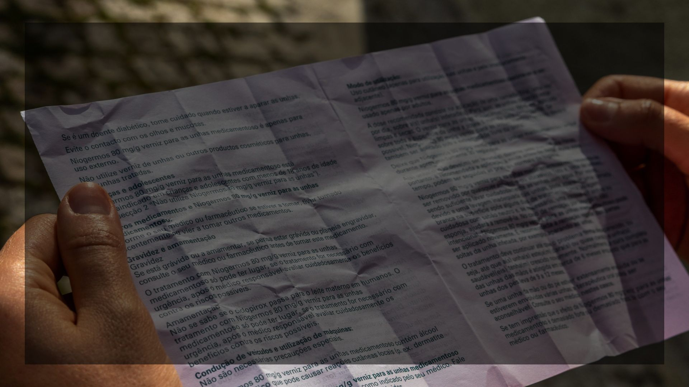
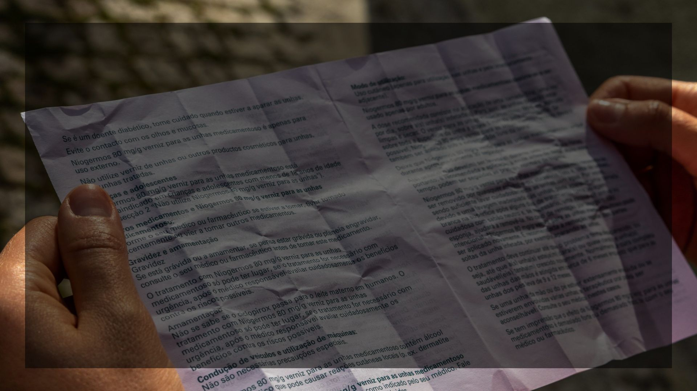

Los Prospectos


A continuación, abordaremos el género Prospecto a partir de uno ficticio: el prospecto de una poción medicinal hecha mediante alquimia.
Nombre comercial: ALQUIMED.
Nombre técnico: Elixiris Purificantis Anima.
Forma farmacéutica: Jarabe oral.
Presentación: Frasco de 150 ml.
---
Composición (ingredientes activos):
Indicaciones:
Indicado para quienes presenten síntomas de:
Contraindicaciones:
Modo de uso (posología):
Efectos secundarios:
Leé el prospecto de “Alquimed” y respondé:
Falso
Verdadero
Verdadero
Falso
El prospecto es un tipo de texto regulado legalmente, obligatorio dentro del envase. Su objetivo principal es informar e instruir al paciente acerca del uso adecuado del fármaco.
Debe incluir campos estandarizados:
En el mismo se emplea un registro formal con terminología biosanitaria. Abundan estructuras impersonales y voz pasiva (por ejemplo, “se recomienda”, “debe tomarse”), lo cual refuerza la autoridad del texto, pero también puede dificultar su comprensión.
El prospecto es complejo por su densidad técnica y oracional, con exceso de pasivas y términos especializados. Esto puede afectar la legibilidad y la adherencia al tratamiento.
Aunque responda a una normativa funcional, puede leerse también desde un análisis de género como un texto de divulgación científica dirigido al paciente. Su finalidad es informativa y directiva, con normativas europeas y nacionales.
En las siguientes páginas pueden ampliar y/o reforzar sus conocimientos sobre el género Prospecto:
https://es.wikipedia.org/wiki/Prospecto
Con todo lo aprendido sobre el género Prospecto, te propongo inventar tu propia poción con su respectivo prospecto, respetando la estructura típica de este tipo de texto.
Restricciones:
Obra publicada con Licencia Creative Commons Reconocimiento Compartir igual 4.0